李睿哲 · 2026.06.23
| 标题 | 会议 / 作者 / 机构 | 时间 | 研究视角 |
|---|---|---|---|
| LLMS GET LOST IN MULTI-TURN CONVERSATION | iclr25 best paper | 2025 May | 信息多轮释放 |
| Modeling Distinct Human Interaction in Web Agents | CMU · Graham Neubig | 2026 May | 用户介入 |
| RealUserSim: Bridging the Reality Gap in Agent Benchmarking via Grounded User Simulation | Salesforce AI Research | 2026 Apr | 用户不合作 |
| HUMANLM: Simulating Users with State Alignment Beats Response Imitation | Stanford · Shirley Wu | 2026 Feb | 用户有深层意图 |
现在的 LLM 在单轮、完整指令下表现很好，但一旦用户把需求拆散到多轮对话里逐步补充，模型性能和稳定性会显著下降。
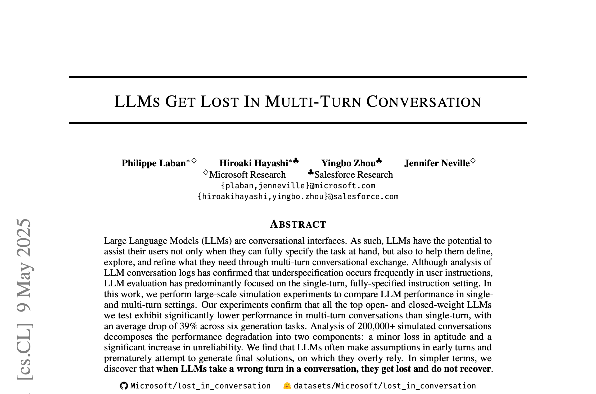
但在现实中，用户很多时候不会一次性把所有信息说清楚，而是在多轮的交互间补充完全。
例如第一轮说：
帮我写一个函数。然后后面逐轮补充：
输入是一个列表。 需要处理空列表。 返回值要是字典。 复杂度最好是 O(n)。 不要用 pandas。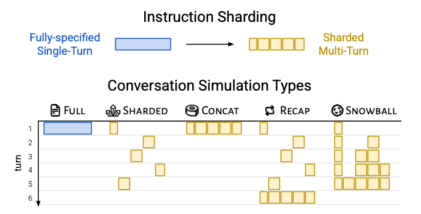
论文把性能下降拆成两个维度：
论文发现，Sharded 场景下模型平均性能显著下降，但主要原因不是 aptitude 大幅下降，而是 unreliability 暴涨。也就是说，模型并不是完全不会做，而是多轮对话中很容易走偏；一旦早期轨迹错了，后面就很难纠正。论文报告：从 Full 到 Sharded，模型 aptitude 平均只下降约 16%，但 unreliability 平均增加 112%，几乎翻倍。
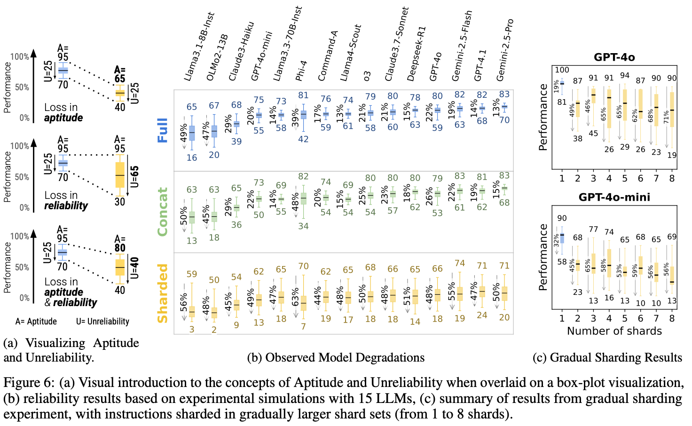
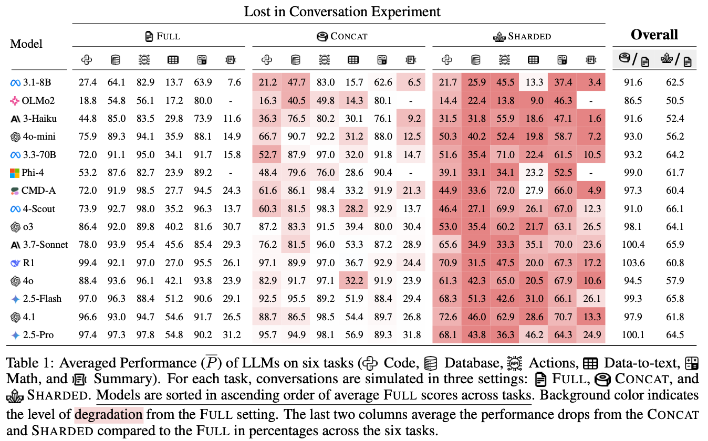
论文总结了几个机制，比较有启发：
模型在信息还不完整时，就急着生成完整解法。比如用户只说“帮我写个函数”，模型就开始假设输入输出格式、边界条件、复杂度要求。问题在于，这些假设一旦写进对话历史，后面会变成“自我污染”的上下文。
当用户后续补充约束时，模型不是从任务状态重新建模，而是在旧答案上修修补补，结果就是越修越乱。论文把这个叫做 answer bloat：多轮最终答案往往比 Full / Concat 长 20%–300%，但更长不等于更好，反而暗示模型不断叠加补丁、保留错误假设。
论文还观察到一种 loss-in-middle-turns：模型更容易关注开头和最后几轮，而忽略中间补充的信息。这和 long-context 的 lost-in-the-middle 很像，只是这里发生在 multi-turn conversation 里。
模型每一轮都输出很长的内容，会把自己的假设、解释、半成品答案不断塞进上下文，导致后续轮次的有效用户信息被稀释。这点和我们平时使用很一致：模型越早“自信地展开”，后面越难拉回来。
不要只把 Web Agent 当成全自动执行器，而要显式建模“用户什么时候会介入、为什么介入、介入后是否还会把控制权交还给 agent”。
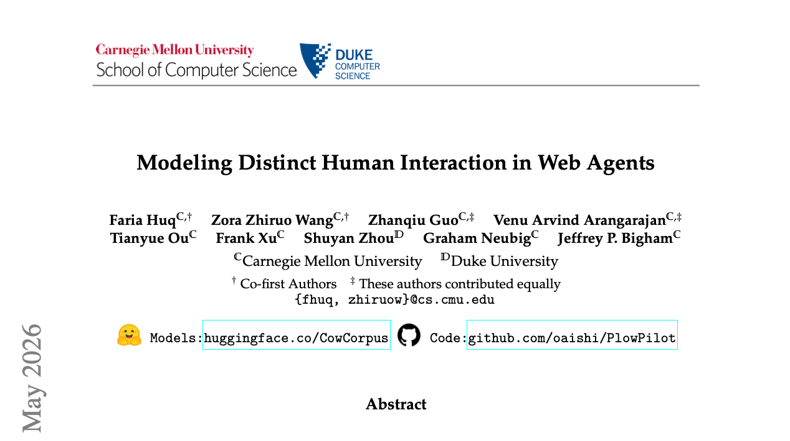
传统 Web Agent 大多默认一个范式：用户给任务 → agent 自动规划 → agent 自动执行 → 最后返回结果。但真实使用中，用户经常会中途介入，例如：
论文认为，现有 agent 的问题不是单纯“不够自动化”，而是 不知道什么时候该自动、什么时候该停下来让用户介入。如果 agent 太自主，它会越过关键决策点；如果 agent 太频繁确认，又会打断用户，降低效率。
预测每一个时间步用户是否会中途介入。
作者收集了一个真实人类和 Web Agent 协作的数据集 CowCorpus，包含 400 条真实用户 Web 导航轨迹，总计 4200+ 个交错的人类/agent action。
数据采集方式是：20 个用户，每人完成 20 个任务，其中 10 个是从 Mind2Web 选出来的标准任务，10 个是用户自己选择的 free-form tasks。总计就是 20 × 20 = 400 条 human-agent collaborative web trajectories。论文记录每一步是谁做的，是 agent 还是 human，以及时间戳和网页快照。
用户介入是为了纠错。比如 agent 点错元素、提前执行不该执行的操作，或者陷入重复无效动作。论文举例说，agent 在产品搜索还没完成前，就过早选择了 location filter；或者 agent 一直循环做无效动作，用户只好接管几步把任务拉回正轨。
用户介入是为了修正偏好不匹配。很多时候用户一开始没有把偏好写完整，比如价格、地点、品牌、筛选条件。agent 执行到中途，用户看到它的行为不符合自己真实偏好，才补充说明。论文举了“买牙膏时用户没提前指定品牌，看到 agent 中间动作后才补充偏好”的例子。
用户介入不是因为 agent 逻辑错了，而是因为网页环境太复杂，比如 dropdown、captcha、dynamic layout、复杂 DOM，或者页面资源没加载出来。用户也可能为了避免不可恢复错误而主动接管。
对用户进行聚类，得到四类协作模式：
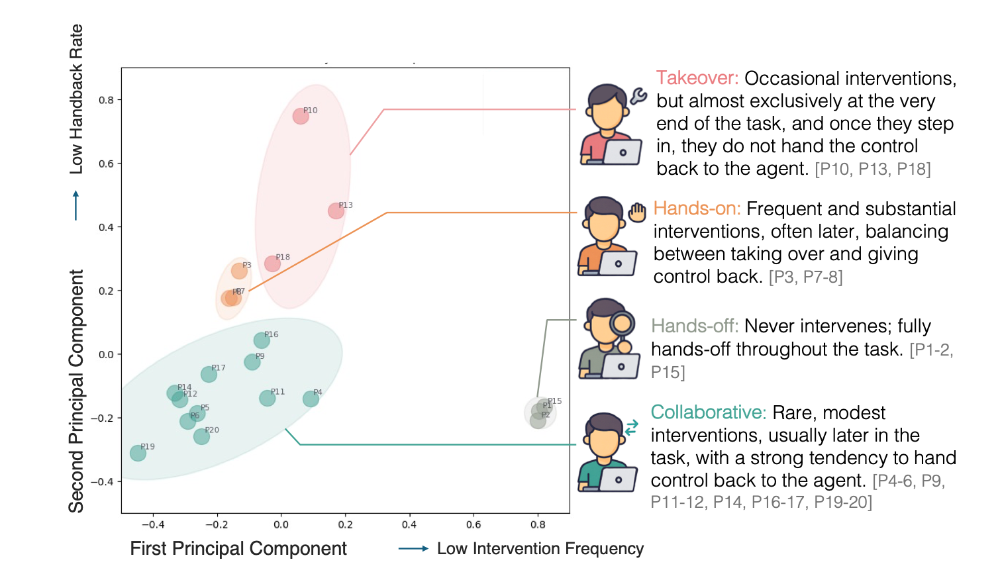
| 类型 | 特征 | 我的理解 |
|---|---|---|
| Hands-off | 很少介入，让 agent 基本端到端执行 | 信任 agent，低监督 |
| Hands-on | 频繁介入，但会和 agent 来回交替控制 | 高监督，共同执行 |
| Collaborative | 选择性介入，介入后通常交还控制权 | 理想协作型用户 |
| Takeover | 介入较晚，但一旦介入就不太交还控制权 | agent 失控后用户接管 |
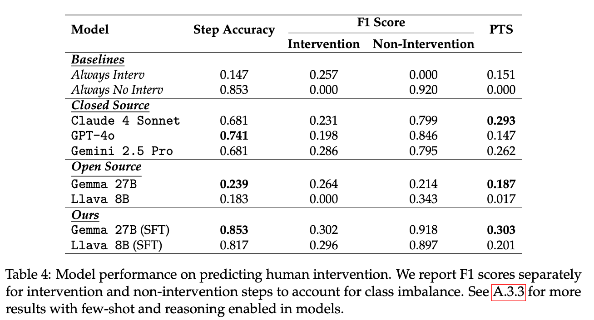
现在很多 agent benchmark，例如 τ-bench，会用 LLM 扮演用户，让 agent 和这个 simulated user 多轮交互。问题是：这个 simulated user 往往不像真实人类。
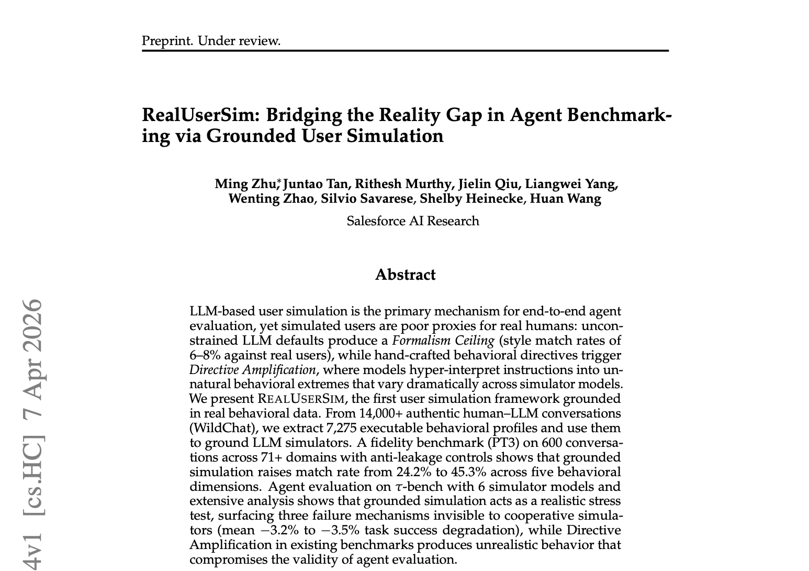
论文指出现有 user simulation 有两个核心问题。 →
没有约束的 LLM simulator 默认会变成“礼貌、完整、语法正确、合作度很高”的用户。换句话说，它不像真实用户，更像另一个 assistant。论文发现，在没有真实 profile 的 baseline 下，style-related dimensions 的匹配率只有 6%–8%，因为 LLM 会把所有用户都“正规化”为工整表达。
如果 benchmark 手写行为指令，比如“你是一个非常愤怒的顾客”，不同 simulator model 会把这个指令放大成很夸张的表演：有的会写 sobbing、choking back tears 这种舞台动作，有的只是说“我很 upset”。同一个 directive 在不同 simulator 上产生不同强度的行为，导致 benchmark 难度不稳定、不同 simulator 结果不可比。
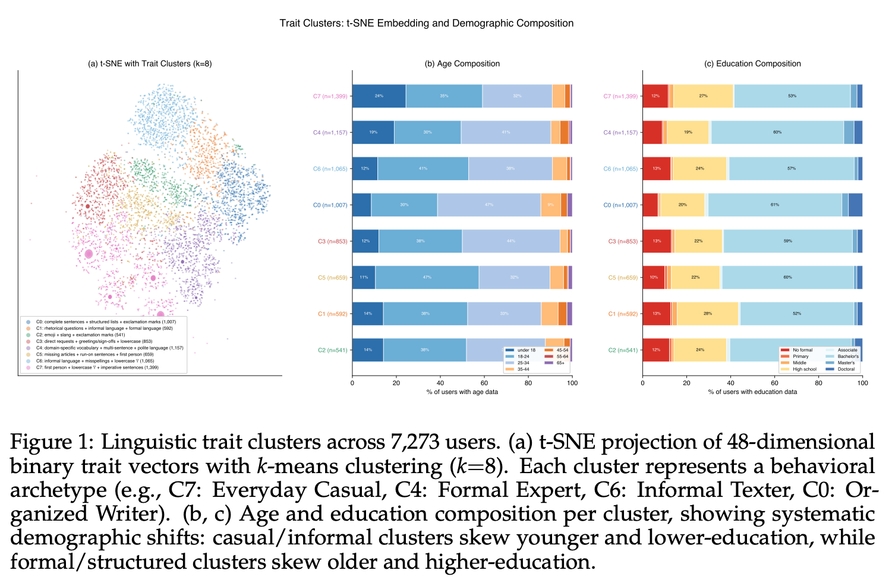
RealUserSim 的方法很直接：从真实人类-LLM 对话里抽取用户行为 profile，然后把这个 profile 注入到 user simulator 的 prompt 里。
它用了 WildChat-4.8M 作为真实对话来源。作者从 3.2M conversations 中筛选出 21,637 条英文、多轮、GPT-4o 轨迹，覆盖 7,311 个 unique users，最后构造了 7,275 个 executable behavioral profiles。
| 部分 | 内容 | 作用 |
|---|---|---|
| Demographics | 年龄、教育、性别、职业、地点等，部分来自显式披露，部分来自推断 | 提供用户背景 |
| Additional background | 从历史对话中总结的额外背景 | 增强上下文 |
| Communication style instructions | Command + Example 的风格手册 | 约束语言风格和交互方式 |
每个 profile 不是一句泛泛的 persona，比如“informal user”，而是一个 Executable Persona Manual。格式是：
Command: 经常重复词语来强调 Examples: "the most the most famous food"; "there are there are huge differences" Command: 用 hmm / ahh 表示犹豫 Examples: "hmm i think the older people"; "hmmm if we eat veegtables" Command: 不满意时要求更多例子或选项 Examples: "share a more short caption."; "share 10 more"
论文对 7,273 个用户基于 48 个 binary linguistic traits 做 t-SNE + k-means，得到 8 个行为 archetype。
| Cluster | 典型特征 | 用户数 |
|---|---|---|
| C0 | complete sentences + structured lists + exclamation marks | 1,007 |
| C1 | rhetorical questions + informal language + formal language | 592 |
| C2 | emoji + slang + exclamation marks | 541 |
| C3 | direct requests + greetings/sign-offs + lowercase | 853 |
| C4 | domain-specific vocabulary + multi-sentence + polite language | 1,157 |
| C5 | missing articles + run-on sentences + first person | 659 |
| C6 | informal language + misspellings + lowercase “i” | 1,065 |
| C7 | first person + lowercase “i” + imperative sentences | 1,399 |
论文分析了 NP 成功但 Real Persona 失败的轨迹，归纳出三类失败机制：
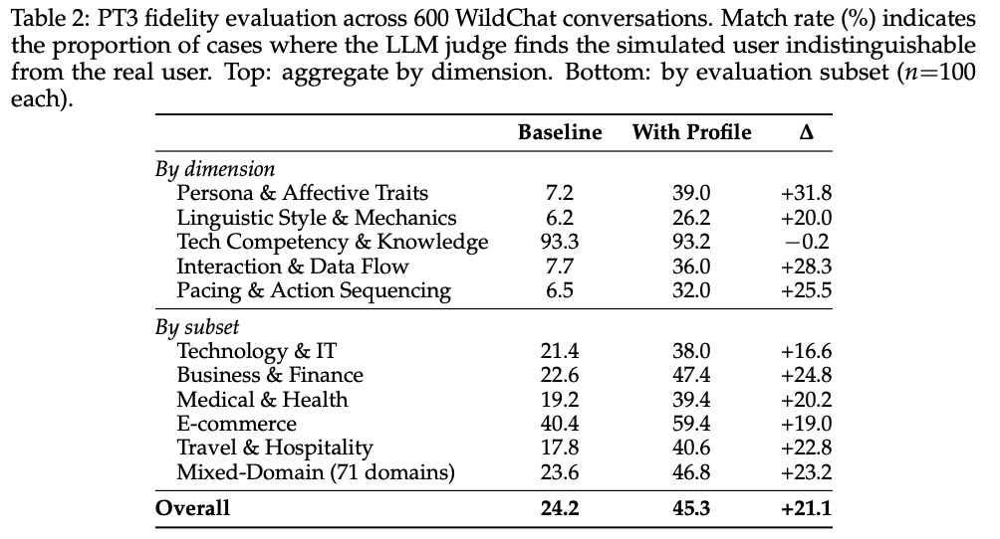
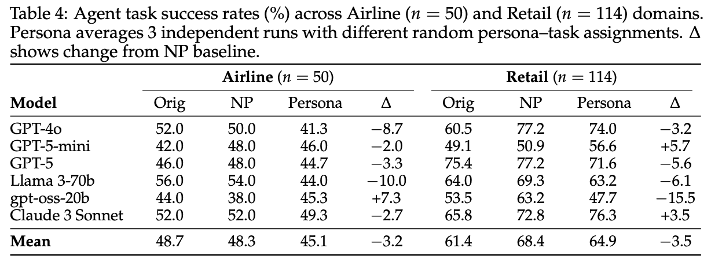
| 失败机制 | 含义 | 例子 |
|---|---|---|
| Information loss | 简短用户风格省略关键任务细节 | 用户只说“cancel the reservations as listed”，agent 多取消了不该取消的人 |
| Agent misinterpretation | 激进/异常表达让 agent 误解意图 | 用户说 “GIMME A REFUND PLS”，agent 误以为用户要取消订单 |
| Compliance failure | 用户 persona 和 benchmark 设定冲突 | 任务要求坚持退款 5 次再放弃，但 hesitant persona 第一次就同意取消 |
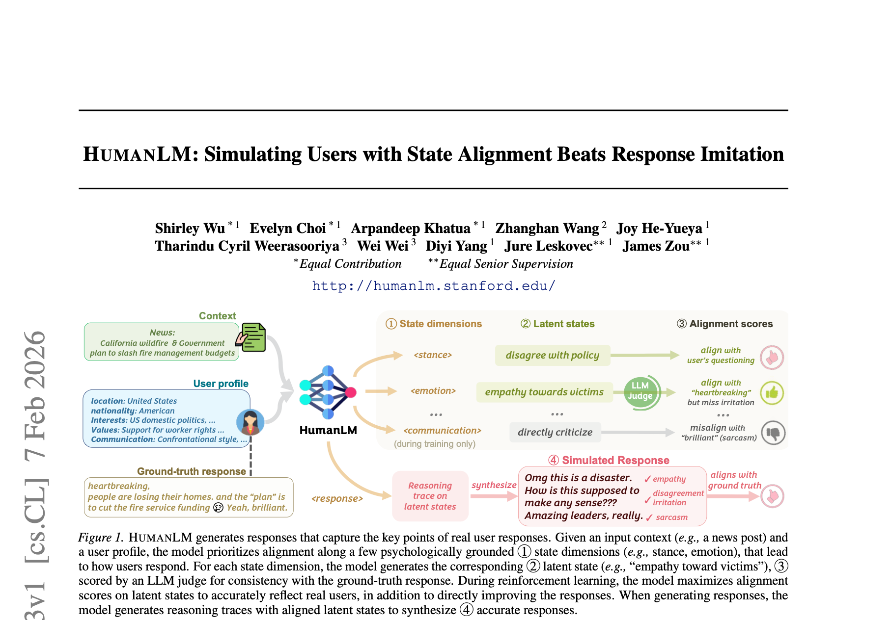
既然模型在 single-turn 下会做，为什么 multi-turn 下不会做？能不能把 single-turn 能力迁移到 multi-turn 行为里？
作者的判断是：这个 gap 很大程度上是 behavioral gap，不是 capability gap。因为同一个模型面对同样信息，只是呈现形式不同，single-turn 能做而 multi-turn 不能做，说明能力已经在模型里，只是在多轮交互中没有稳定调用出来。
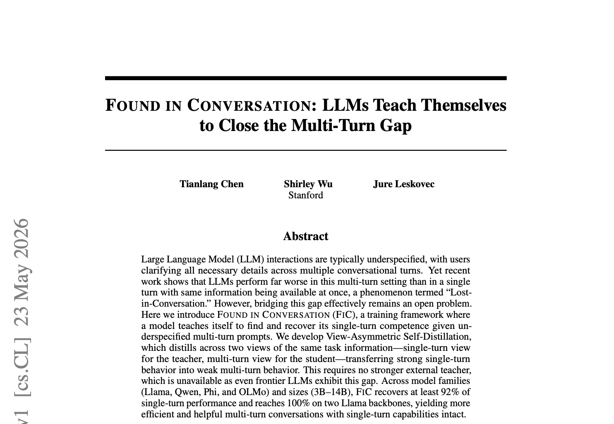
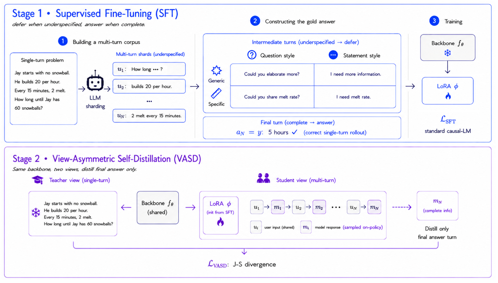
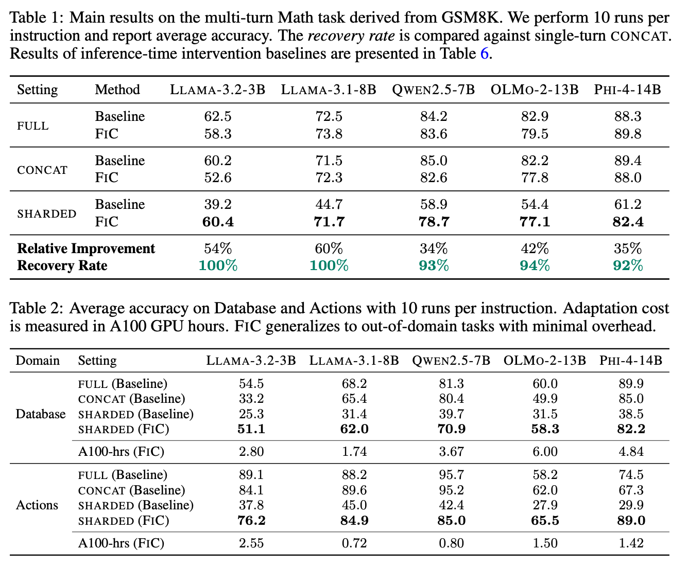
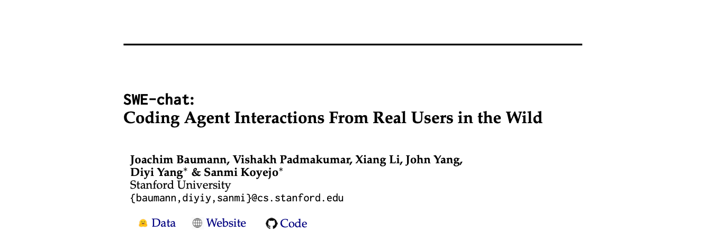
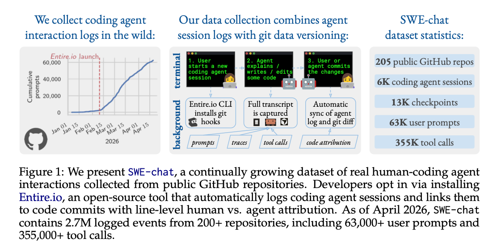
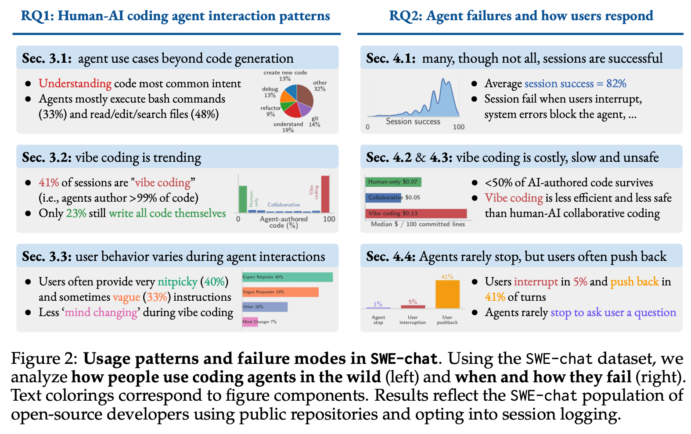
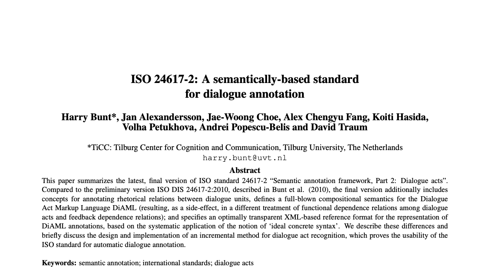
| 维度 | 标什么 | 例子 |
|---|---|---|
| Task | 推进任务本身 | 请求、回答、建议、承诺、告知 |
| Auto-Feedback | 说话者表达自己是否理解 / 感知到对方信息 | “I see”, “I don’t understand” |
| Allo-Feedback | 说话者检查或回应对方是否理解 | “Do you follow?”, “right?” |
| Turn Management | 管理谁说话、是否继续说 | “uh”, “go ahead”, “let me finish” |
| Time Management | 管理时间、暂停、延后 | “wait a second”, “hold on” |
| Discourse Structuring | 组织话语结构 | “first”, “by the way”, “to summarize” |
| Own Communication Management | 修正自己的表达 | “I mean…”, “let me rephrase” |
| Partner Communication Management | 处理对方表达问题 | “Did you say X?”, “could you repeat?” |
| Social Obligations Management | 礼貌、问候、道歉、感谢、告别 | “thanks”, “sorry”, “hello” |
| Contact Management | 建立/保持/检查接触通道 | “hello?”, “are you there?” |
| Task Management | 管理任务流程、阶段、规划 | “let’s move to the next step” |
| Function | 例子 |
|---|---|
| Inform | “We prefer zip.” |
| Answer | “Yes, 50 is the default chunk size.” |
| Confirm | “That’s correct.” |
| Disconfirm | “No, that’s not what I mean.” |
| Correction | “Actually, I meant DRB-II, not DRB1.” |
| …… | …… |
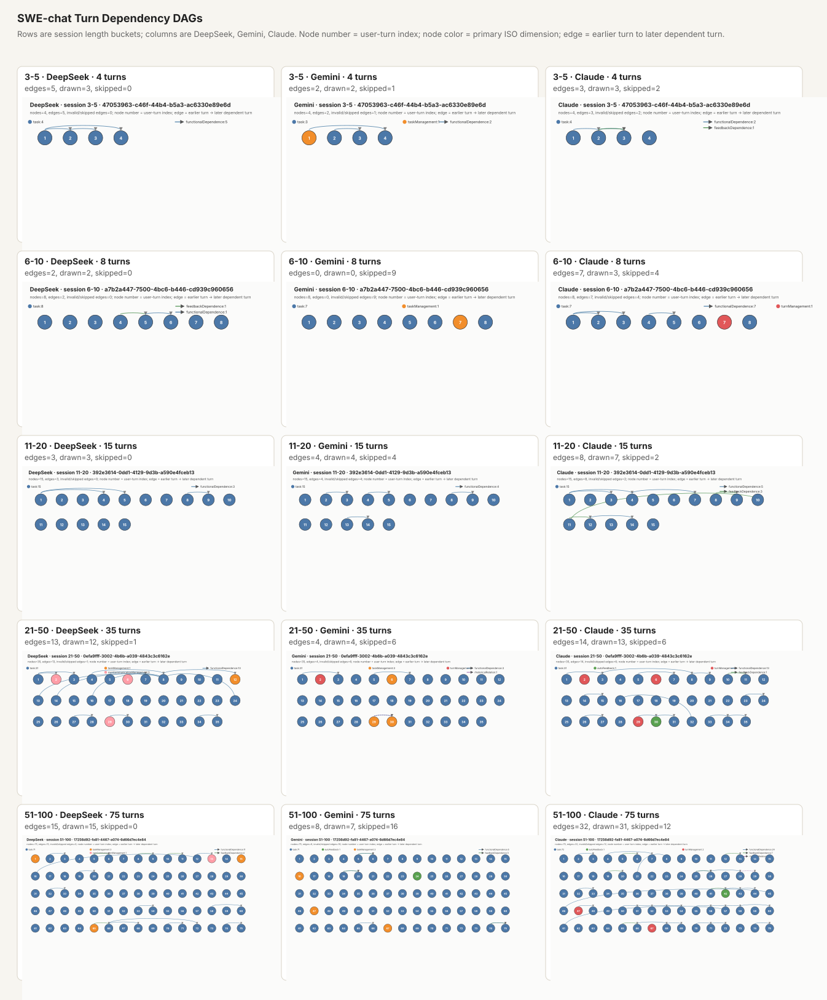